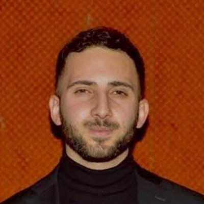
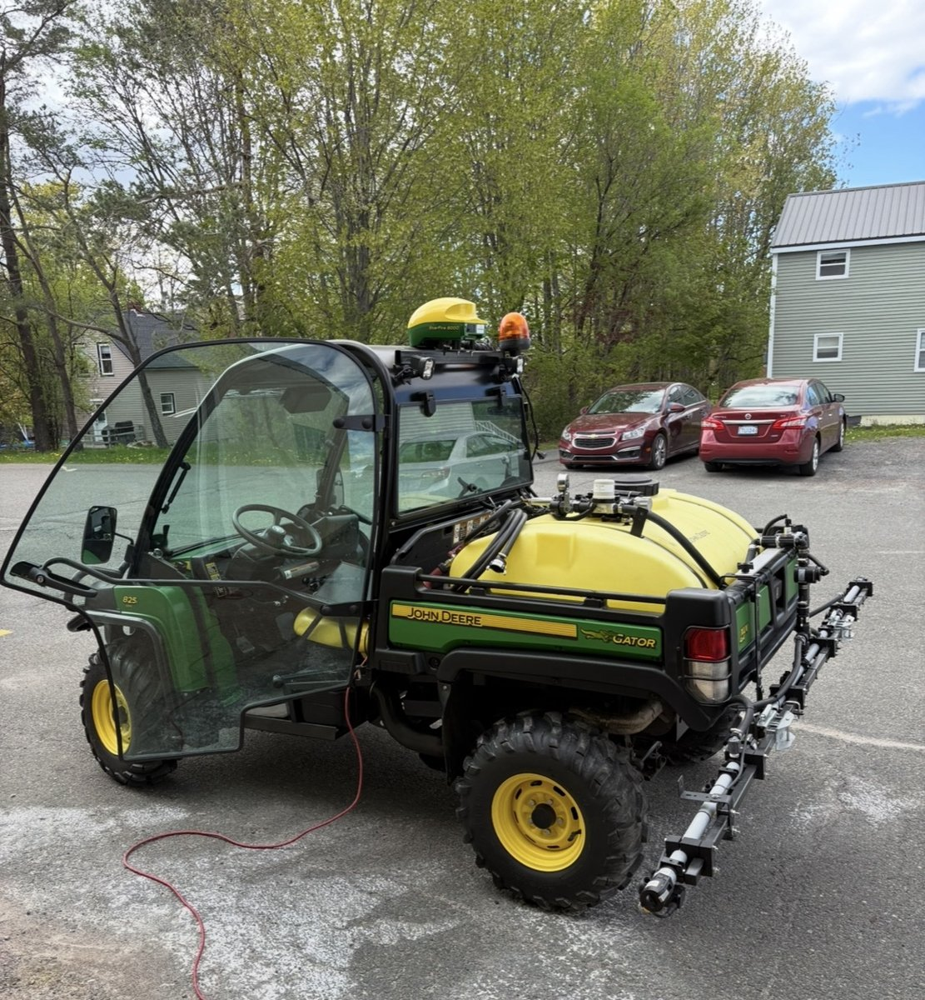
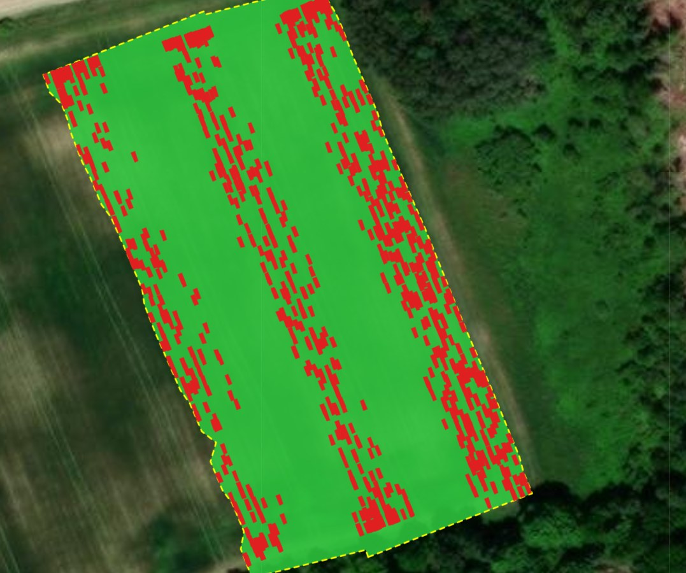
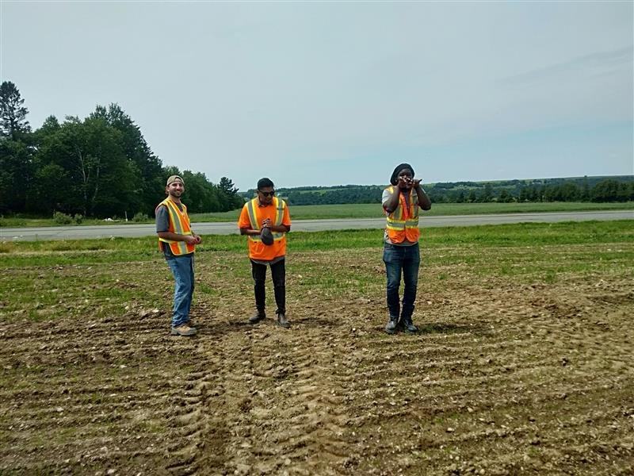
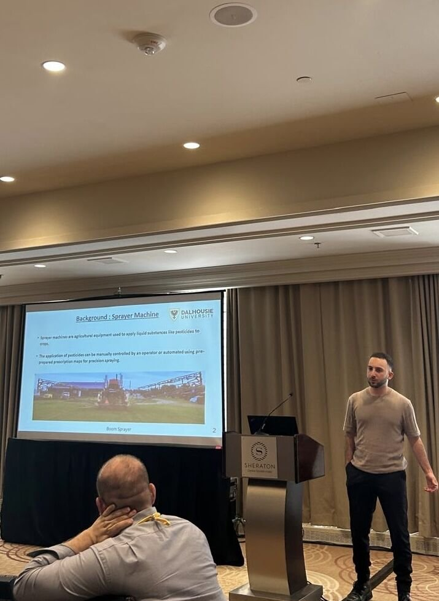

Oussama Bessaad
Mechatronics Engineer · Agricultural Machinery & Precision Agriculture
I work at the intersection of mechatronics and agricultural machinery: integrating sensors and actuators, building ECUs and their embedded software, connecting tractors and implements over ISOBUS / CAN, and designing the mechanical parts and enclosures that hold it all together. Everything I build gets mounted, wired and tested on real equipment in the field.
Projects

Machine vision + individual nozzle control on a John Deere UTV (16 nozzles)
Vision-triggered spot spraying with Hypro ProStop-E nozzles over ISOBUS.
View project →
Machine vision + individual nozzle control on a CASE IH commercial sprayer (60 nozzles)
Camera-based spot spraying across a 60-nozzle boom, commissioned in the field.
View project →
Data logging & feedback map generation
Georeferenced as-applied maps showing exactly where each nozzle sprayed.
View project →
Hardware prototyping & integration
Parts, drilling and mounting, soldering and wiring: building and integrating the hardware on the machine.
View more →
Field work & experiments
Debugging on real machines, running trials and collecting data in the field.
View more →
Agricultural conferences & seminars
ASABE, CSBE-SCGAB and the New Brunswick potato conference: presenting and demoing precision spraying work.
View more →